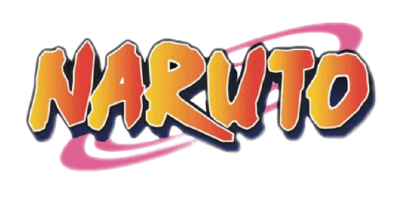
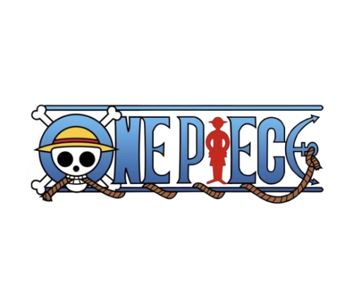

Sources and Media
This website is a Mini Project; Anime/Manga Showcase . Content summaries were adapted from publicly available information on popular anime and manga series. Images used belong to their respective owners and are for non-commercial educational display only.
Sources and Credits to:

